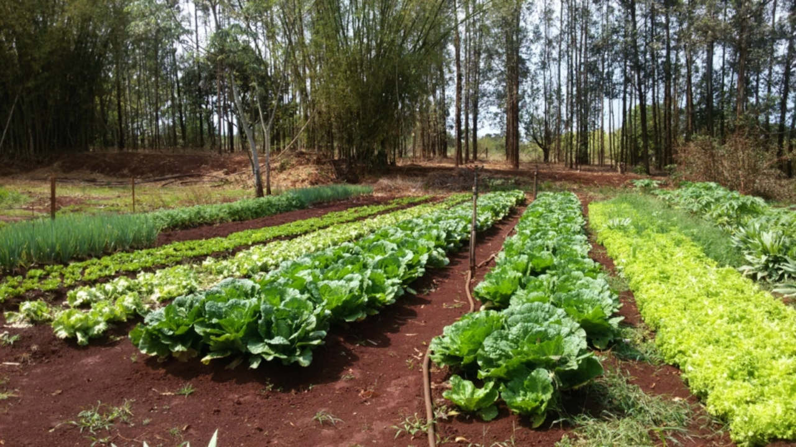
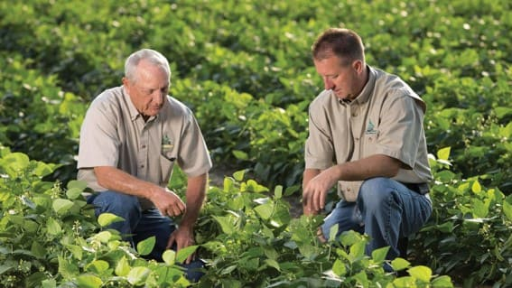
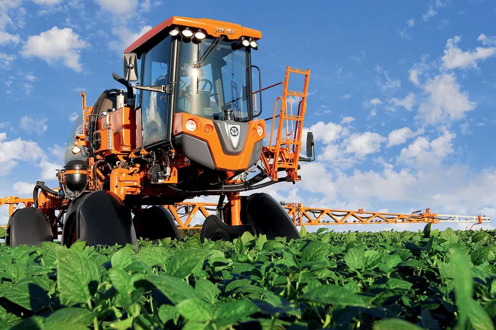

Nós somos uma empresa dedicada à agricultura sustentável e tecnologia agrícola.
Oferecemos consultoria especializada para melhorar a produtividade das suas plantações.
Vendemos equipamentos modernos para facilitar o seu trabalho no campo.
Entre em contato conosco pelo email: contato@agricultura.com